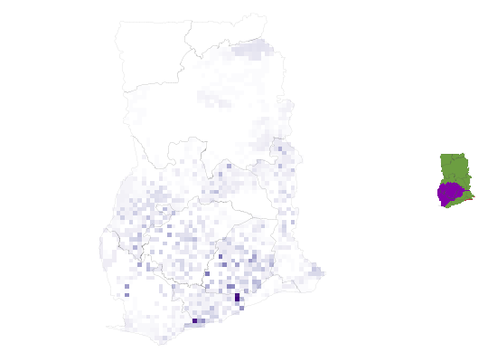
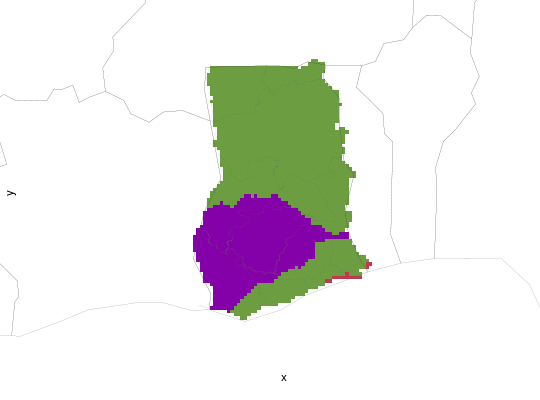
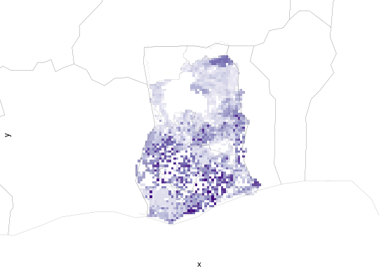
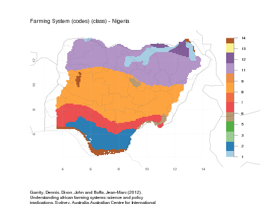
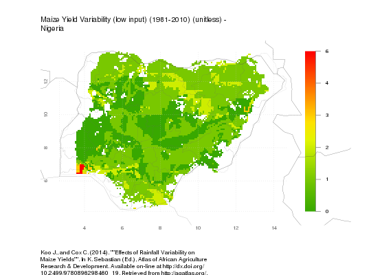
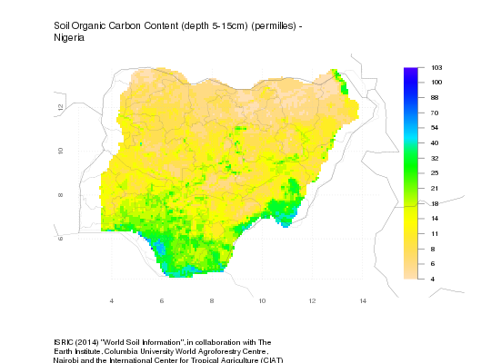

Method to plot HarvestChoice rasters with mutiple layout and symbology options.
See examples below. Note that calling genPlot(...) is equivalent to calling
the convenience function hcapi(..., format="plot").
genPlot(var, iso3 = "SSA", pal = character(0), layout = "default", style = NULL, ...)
classIntervalsclassIntervals,
e.g. n=9 and dataPrecision=0.raster plot
API call: generate 2 plots showing farming systems and 2012 population density for Ghana
$ curl http://hcapi.harvestchoice.org/ocpu/library/hcapi3/R/hcapi \
-d '{"var":["FS_2012_TX", "PD12_TOT"], "iso3":"GHA", "format":"plot"}' \
-X POST -H 'Content-Type:application/json'
--
/ocpu/tmp/x03d5aa8e98/R/.val
/ocpu/tmp/x03d5aa8e98/stdout
/ocpu/tmp/x03d5aa8e98/source
/ocpu/tmp/x03d5aa8e98/console
/ocpu/tmp/x03d5aa8e98/info
/ocpu/tmp/x03d5aa8e98/files/DESCRIPTION
/ocpu/tmp/x03d5aa8e98/graphics/1
/ocpu/tmp/x03d5aa8e98/graphics/2
GET all generated plots in a ZIP archive
$ wget http://hcapi.harvestchoice.org/ocpu/tmp/x03d5aa8e98/graphics/last/png?width=640
$ wget http://hcapi.harvestchoice.org/ocpu/tmp/x03d5aa8e98/graphics/last/svg
hcapi link\[classInt:classIntervals]classIntervals
# Generate standard raster plot of 2012 population density for sub-Saharan Africa genPlot("PD12_TOT", pal="YlOrRd", style="pretty", n=8)#>#> Warning: grid has empty column/rows in dimension 1#> Warning: grid has empty column/rows in dimension 2#> NULL# Generate 3 raster plots for Ghana with legend and title but not axes genPlot(c("AEZ16_CLAS", "cass_h"), iso3="GHA", layout="thumbnail")#> NULL# Generate 3 raster plots for Nigeria with the specified dimensions hcapi(c("FS_2012", "yield_l_cv", "soc_d15"), iso3="NGA", format="plot")#> NULL